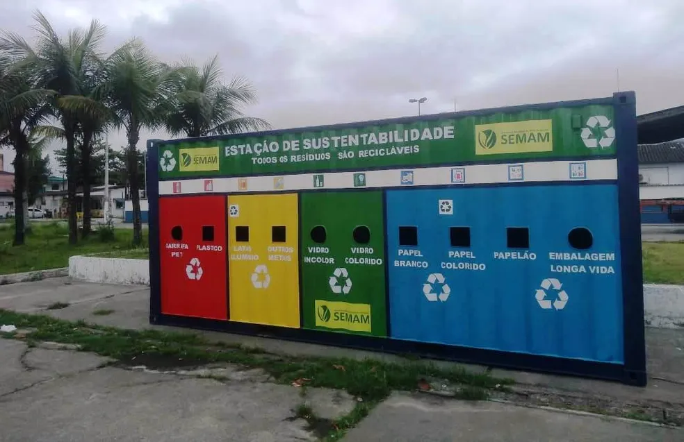
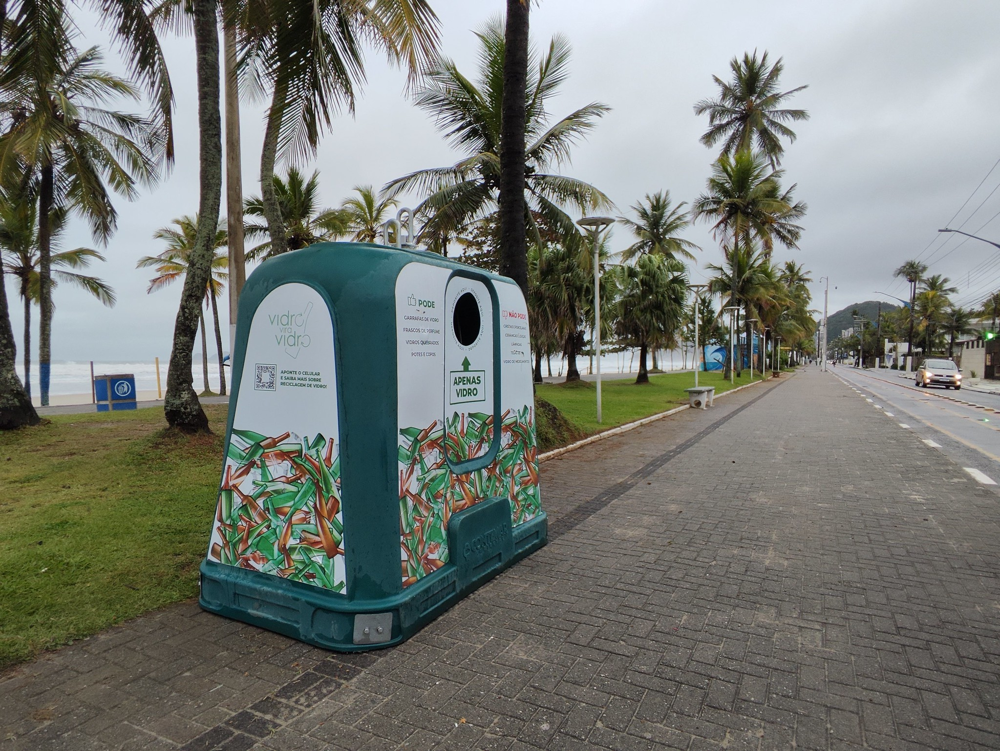
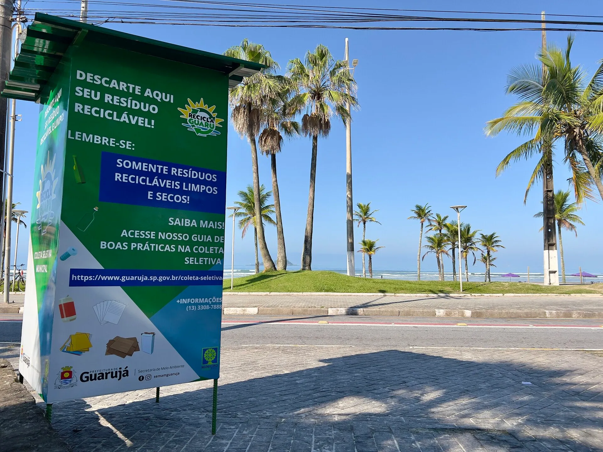

Ajude o meio ambiente descartando corretamente seus recicláveis.
Este site ajuda a localizar pontos de coleta de materiais recicláveis, incentivando práticas sustentáveis e a preservação do meio ambiente.
O descarte correto de lixo é uma ação importante tanto para preservar a cidade, evitando poluição por resíduos e visual, quanto para a saúde e segurança das pessoas, evitando enchentes e alagamentos causados por acúmulo de lixo em bueiros
Não descarte no lixo doméstico materiais perigosos, recicláveis (que devem ir para coleta seletiva) ou orgânicos compostáveis. Itens como pilhas, baterias, lâmpadas fluorescentes, medicamentos, eletrônicos, vidros quebrados e óleos devem ser levados a pontos de coleta específicos para evitar contaminação do solo e acidentes.
Aqui estão alguns exemplos de lugares corretos para o seu lixo ser reciclado da forma correta:



Aqui estão alguns pontos de coleta para reciclagem mais próximos
Faculdade Unaerp - Av Dom Pedro I - Enseada | coordenadas. -23.97659379061932, -46.221900785597185
Avenida Miguel Estéfno, 900 – Praia da Enseada
Avenida Miguel Estéfno, 4.710 – Praia da Enseada
Av. Venezuela x Av. Miguel Estefano.
Devem estar limpos e secos; dobre caixas para economizar espaço. Evite papel engordurado, papel higiênico e guardanapos usados. Destino: coleta seletiva.
Lavar rapidamente para retirar resíduos e, se possível, amassar. Evite materiais muito sujos. Destino: coleta seletiva.
Lavar, se estiver quebrado, embalar em papel ou caixa para evitar acidentes. Destino: coleta seletiva ou ecopontos.
Limpar, pode amassar. Destino: coleta seletiva.
Em sacos bem fechados. Melhor opção: compostagem. Destino: lixo comum ou compostagem.
Levar a pontos de coleta específicos. Nunca jogar no lixo comum.
Devolver em farmácias que recebem esse tipo de material. Nunca jogar no lixo comum ou no vaso sanitário.
Levar a pontos de coleta em mercados ou lojas. São altamente poluentes e não devem ir para o lixo comum.
Destino: lixo comum.